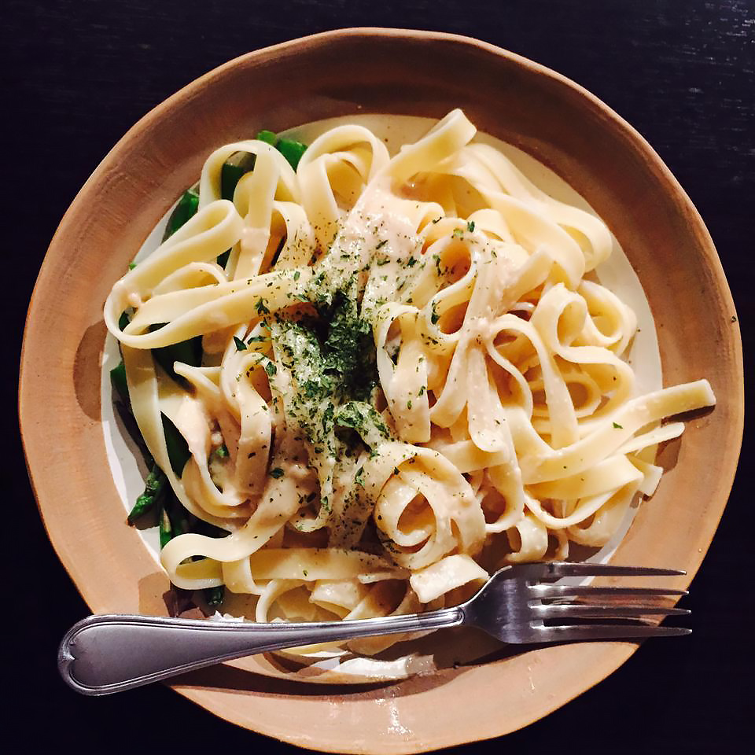

To Die For Fettuccine Alfredo

Description
TThis is a recipe that I created by modifying my mother's recipe. My boyfriend is a fettuccine Alfredo connoisseur and he scrapes the pan every time!
I get nothing but rave reviews when I make this dish. I must warn you, this recipe is not for the health conscious. Enjoy!
Ingredients
- 24 ounces dry fettuccine pasta
- 1 cup butter
- ¾ pint heavy cream
- salt and pepper to taste
- 1 dash garlic salt
- ¾ cup grated Romano cheese
- ½ cup grated Parmesan cheese
Steps
- Bring a large pot of lightly salted water to a boil.
- Add fettuccine and cook for 8 to 10 minutes or until al dente; drain.
- In a large saucepan, melt butter into cream over low heat.
- PAdd salt, pepper and garlic salt. Stir in cheese over medium heat until melted; this will thicken the sauce.
- Add pasta to sauce. Use enough of the pasta so that all of the sauce is used and the pasta is thoroughly coated. Serve immediately.